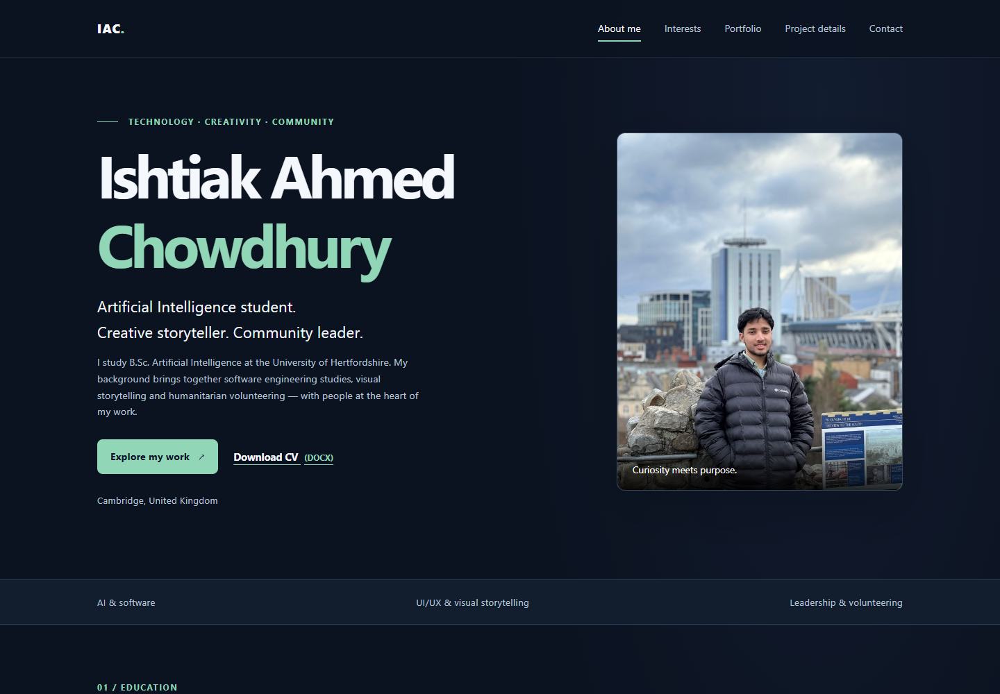

Case study / Web design
Personal profile website.
A digital introduction that connects my technical interests, creative experience and community work.

01 / Context
Overview
This personal profile website introduces my education, experience, interests and contact information. It is intended to support portfolio building and conversations about placement opportunities.
02 / Purpose
Objectives
Organise information into five clear pages, make key content easy to find, and create a consistent presentation that adapts to phones, tablets and desktop screens.
03 / Implementation
Structure & process
Each page uses semantic HTML and the same navigation. A shared stylesheet manages layout and visual design. Small JavaScript enhancements control the mobile menu and provide local contact-form feedback.
04 / Tools
Technologies
HTML5, CSS3 and vanilla JavaScript. Local SVG illustrations and the supplied profile photograph provide the visual content. No runtime libraries, frameworks or templates are used.
05 / Design decisions
Designed for clear interaction
Skip navigation, visible keyboard focus, descriptive image alternatives, labelled fields and reduced-motion preferences are included in the implementation. Formal WAVE evidence remains a separate student task.
06 / Reflection
Outcome & next steps
The site provides a working portfolio structure and a client-side contact demonstration. Next steps are to confirm my year of study, add further project artefacts, and complete the independently required accessibility and usability evaluations.